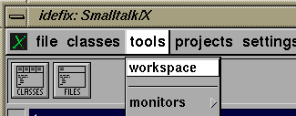
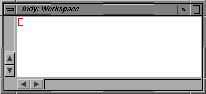
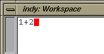
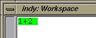
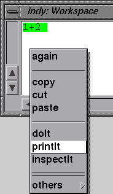
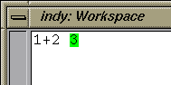

Notice that some toolbar buttons show a history or special menu, when the mouse button is kept pressed. If you only click on them momentarily (i.e. release quickly), they will open the tool in a default mode (usually on the last location or in a default mode).
It is also a good idea to create a snapshot before you try out something dangerous - such as modifying a base system or GUI class. To save a snapshot, click on the save button in the launcher windows toolbar (it's the little diskette icon, if you are one of those oldsters who still know what that is).
When you later restart Smalltalk, it will return to exactly the point where you left off before (try it now and here to get that secure feeling!).
However, don't panic:
you cannot really destroy or do permanent harm to your ST/X system in the browser -
the worst that can happen is that your last few changes are lost
and you have to restart the system in fresh state
(i.e. without a snapshot).
From this, you can incrementally reapply your changes in the
ChangesBrowser.
The way this is done is described below, in "Recovering from a Crash".
To load a patchfile, open a FileBrowser, select the file and choose the "FileIn" menu function (in the "File"-Menu). You will also find a "FileIn" button in the filebrowser's toolbar menu. If you want to look at the individual patches before installing (in case you don't trust them), you can also open a ChangesBrowser on it (in the FileBrowser's "Tools" menu), and look at individual patches before applying them. The ChangesBrowser would also show a colored diffview in case existing code is changed.
Of course, such files can also be loaded programmatically with:
'...filename...' asFilename fileIn.
ChangesBrowser openOn:'...filename...'
Any such loaded changes are only life during the current session. Therefore, you should save a snapshot image after loading, and use that image in the future (it's a good idea to start with a fresh system, apply any patches and keep that image around as a startup image for new projects).
Alternatively, you can also create a subdirectory
named "userPatches" under the binary directory (the one in which your stx executable is located).
All files found there will be automatically loaded at initial startup
(but not, when an image is restarted).
Thus, saving all patch files there assures, that they are present, whenever you
start stx from scratch (i.e. via "stx -I").
Of course, you can put any class definition or other expressions (in chunk format) into this directory. It is therefore possible to have any private tool automatically installed and started with every startup. (if in doubt, take the ".rc" files found in the execution directory as a guideline)
A workspace window is NOT used for programming. Instead, it is a scratchpad window into which some code can be typed for demonstration, to try things and as a temporary buffer (as an editor, to keep code snipplets around).
A workspace allows you to enter Smalltalk code and execute it. This is also refered to as "immediate execution", since you can typeIn some piece of code and immediately evaluate it. There is no need for a main-program or a slow compile/link/execute cycle.
For a new workspace, select the ![[-->]](../../pictures/rightArrow.xbm)

(these pictures were taken a long time ago on a Silicon Graphics Indy machine.
Obsolete now, but I keep them for nostalgic reasons)
The above action opens a view which looks similar to (*):

You can use workspaces as text scratchpads, as copy buffers or to evaluate Smalltalk expressions (which is their main use). Some more info about workspaces is found in the workspace chapter of the "Tools Manual".
DoIts are perfect to try out something quickly:
you can evaluate expressions to send messages,
without a need to write a full program which remains permanently in the system
(and has to be removed later).
They can also be used for all kinds of computations (such as math),
or as a scripting language - i.e. for the kind of work
other less lucky programmers have to use batch, shell or even (uh - ugly) tcl scripts for.
Some examples of useful scripts are found in "Useful Scripts for Workspaces".
To execute some Smalltalk code, type it into the workspace:

select it (using the mouse):

and evaluate it with the workspaces middle-button

the result is displayed in the workspace:

There are also keyboard accelerators for all common operations:
"doIt" is usually bound to "Alt-d"
and "printIt" to "Alt-p".
If these do not seem to work, try the "Ctrl"-key
instead of "Alt".
A list of accelerators is found in
"Getting started - Keyboard accelerators".
Finally, a selection is quickly made by pressing the "ESC" key, which selects the current line's text from the beginning to the current textcursor position. (i.e. a printIt operation can also be done with two keys: "ESC" followed by "printIt")
In addition (because we are lazy), doIt-evaluations are also possible without any selection at all; in this case, the current cursor line is taken and evaluated. (i.e. a printIt operation can be done with a single "printIt" key, as long as the cursor is in the line to be evaluated).
Like on a piece of paper, you can click-and-type anywhere within the workspace (i.e. you are not forced to type into the last line or right after a line-end). However, if you prefer that old emacs or vi-feeling, take a look at the "tools"-"editor" settings dialog in the launcher. (check the item named "Textcursor behavior at line-end").
Also, any text in the workspace can be selected for doIt evaluation You can reselect any previous expression and you do not have to retype any text. PrintIt will paste its result after the selection.
Try a few expressions; such as:
(don't care for the as yet unknown Smalltalk syntax - the meaning will be explained later)
1 + 2
2 sqrt
Transcript showCR:'hello world'
Transcript showCR:(2 sqrt)
(Button label:'hello') open
WorkspaceApplication open
|b|
b := Button label:'hello'.
b action:[ b destroy ].
b open
MyWorkspace.wsp" exists in the ST/X directory,
the system workspace which is opened initially will automatically add a tab with that file's contents.
Also, a "MyWorkspace" menu item is shown in the menu which is associated
with the workspace icon in the Launcher's toolbar.
You can place commonly used Smalltalk expressions into that file; for example, the author's file looks like:
Smalltalk loadPackage:'exept:expecco/application'.
Smalltalk loadPackage:'expeccoNET:server/application'.
Smalltalk loadPackage:'stx:goodies/sunit'.
Smalltalk loadPackage:'stx:goodies/magritte'.
Smalltalk loadPackage:'stx:goodies/magritte/tests'.
Smalltalk loadPackage:'exept/libcrypt'.
Smalltalk loadPackage:'exept/libcrypt/tests'.
Smalltalk loadPackage:'exept/libcrypt/ssl'
Smalltalk loadPackage:'exept/libcrypt/ssl/tests'.
Smalltalk loadPackage:'exept/instantMessaging/jabber'
Smalltalk loadPackage:'exept/vncViewer'.
Smalltalk loadPackage:'exept/programming/oom'.
Smalltalk loadPackage:'stx:libsvn'.
Smalltalk loadPackage:'cvut:fel/smallruby'.
Smalltalk loadPackage:'cvut:stx/goodies/libtool3'.
Smalltalk loadPackage:'cvut:stx/goodies/libwidg4'.
Smalltalk loadPackage:'cg:private' asAutoloaded:true
Smalltalk loadPackage:'cg:croquet'.
Croquet allClassesDo:[:cls | cls initialize].
TestingScriptRegistry := nil.
Croquet::SimpleDemoMasterSimple new open
Smalltalk loadPackage:'cg:constraints'.
Smalltalk loadPackage:'cg:newCompiler'.
cg_newCompiler loadSubProjects
Object enableBreakPoint:#cg.
Object disableBreakPoint:#cg.
So, if you get into the debugger while evaluating the following examples, press the debugger's "Abort" button (or simply close it) and retry whatever you did (but look for any typing errors - otherwise you may get another debugger)
Do NOT fear the debugger - as opposed to whatever programming experience you might have, the Smalltalk debugger is your best friend and the better programmers actually write most of their program in the debugger!
To get used to the debugger, try the following example
(which contains an error on purpose) in a workspace.
(if tried from within the document viewer, a confirmation dialog will be shown
before the debugger window is actually opened):
1 / (1 min:0)
For more information on what is shown in the debugger and how to use
it, read "Using the Debugger".
[
100 factorial
] loop
In the debugger, either press the "Abort"-button to leave the erroneous execution, or "Continue" to proceed.
Another option to stop a runaway program is to press "CTRL-Break" or "CTRL-Y" (Ctrl-Shift-y). This has the same effect as the debugger's abort action described above. The ongoing computation is immediately stopped and the workspace returns to its idle state, awaiting your next command. In this case, no debugger is opened.
Notes:
(*) it will definitely look different, especially more modern.
The screenshots here are *very* old, and the author does not find the time to do this
screenshotting over and over
(actually, this is
just a fine excuse for his nostalgic feelings).
So some of this document is still showing how it looked 20 years ago.

Copyright © Claus Gittinger Development & Consulting
Copyright © eXept Software AG
<cg@exept.de>